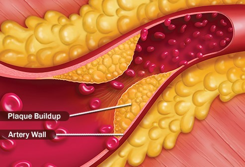
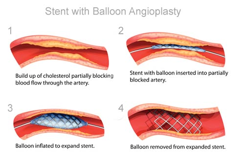

When blood can't get to your heart, your heart muscle doesn't get the oxygen it needs. Without oxygen, its cells can be damaged or die.
The key to recovery is to get your blood flow restored quickly. Get medical help right away if you think you're having symptoms of a heart attack.

Causes
Over time, cholesterol and a fatty material called plaque can build up on the walls inside blood vessels that take blood to your heart, called arteries.
This makes it harder for blood to flow freely.
Most heart attacks happen when a piece of this plaque breaks off. A blood clot forms around the broken-off plaque, and it blocks the artery.
Symptoms
You may feel pain, pressure, or discomfort in your chest. You could be short of breath, sweat, faint, or feel sick to your stomach. Your neck, jaw, or
shoulders might hurt.
Men and women can have different symptoms. Men are more likely to break out in a cold sweat and to feel pain move down their left arm.
What I do?
If you or someone you're with has symptoms that might be a heart attack, call 911 right away. If it is a heart attack, you're more likely to survive if
you get treated within 90 minutes. While you're on the phone, the person should chew and swallow an aspirin (unless they're allergic) to lower the risk of a
blood clot. Are they unconscious? Hands-only CPR can double their chances of survival.

Treatment
Doctors will move quickly to restore the flow of blood to your heart. You may get drugs that dissolve blood clots in your arteries.
You'll likely get a procedure called a coronary angiogram. Doctors put a thin tube with a balloon on the end through your artery. It opens up the blockage
by flattening the plaque in your arteries. Most times, doctors place a small mesh tube called a stent in your artery to make sure it stays open..
Prevention
If you smoke, stop. It will immediately cut your chances of a heart attack by a third.
Get exercise and eat right. The American Heart Association recommends 30 minutes of moderate exercise a day, 5 days a week. Eat plenty of fruits, veggies, and whole grains to keep your arteries healthy.
For some people, taking a daily aspirin will help. Talk to your doctor to see if it's right for you.
Also, find positive ways to manage your stress.